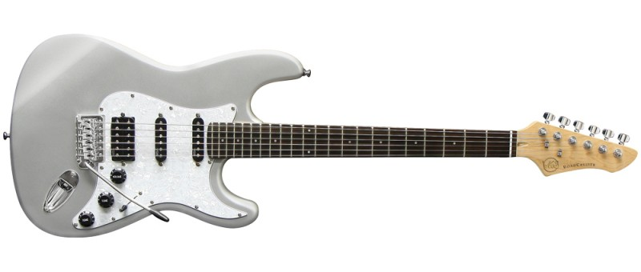

Ma guitard.com |
Produit |
VGS Guitare electrique Classix Series RoadCruiser VST-110 |
Contact |
 |
. Corps massif en tilleul
. 25,5' = Diapason 648 mm, largeur de sillet 43 mm
. Touche en palissandre, 22 frettes, Trussrod Bi-Flex
. 2 VGS Tucson SCC-1 Single-Coils, 1 VGS Tucson HBC-1 Humbucker (made in Korea), Selecteur 5 positions; 1 Mastervolume, 2 Tonalites
. Accastillage chrome, mecaniques a bain d'huile, vibrato standard
. Plaque de protection 3 plis |